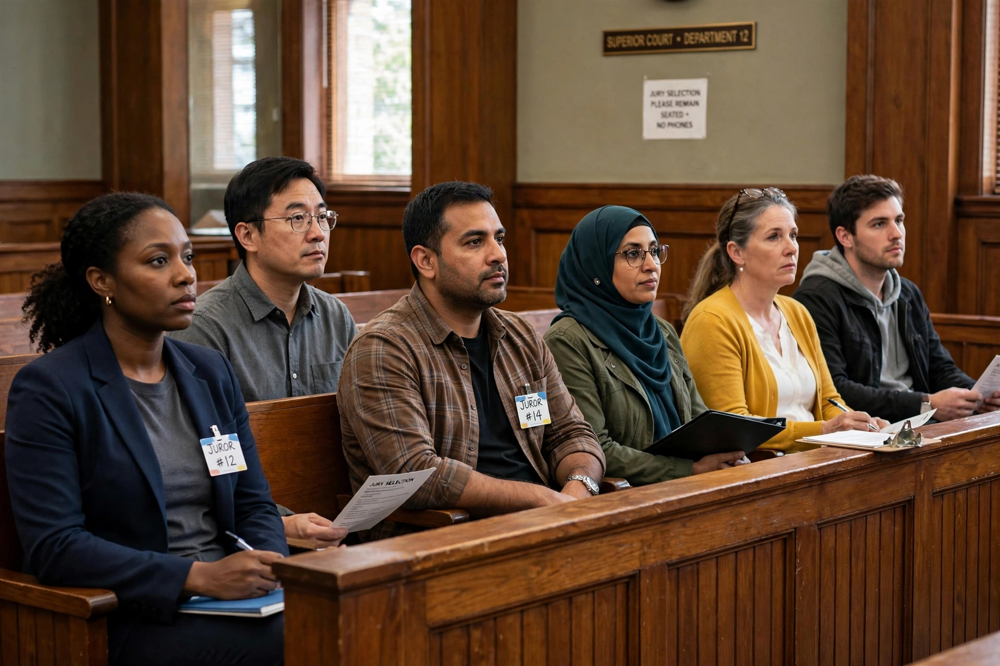

From Wikipedia, the free encyclopedia
| Challenge for cause | |
|---|---|
| Field | Trial procedure; jury selection |
| Stage | Voir dire |
| Standard | Juror cannot be fair and impartial |
| Number allowed | Unlimited (if granted by the judge) |
| Contrast | Peremptory challenge (limited in number) |

A challenge for cause is a request, made during voir dire, that a prospective juror be dismissed because a specific reason—bias, prejudice, a relationship to a party, financial interest, or a fixed opinion about the case—shows the juror cannot be fair and impartial. Unlike peremptory challenges, which are limited in number and require no stated reason, challenges for cause are unlimited but succeed only if the judge is persuaded the ground for dismissal exists.
Common grounds include implied bias, such as the juror being related to a party or witness or having served on a jury in a related case, and actual bias, such as statements in voir dire revealing a fixed opinion on guilt or innocence or an inability to follow the court's instructions on the law. In capital cases, a juror whose views on the death penalty would prevent or substantially impair the performance of their duties may be excused under the standard of Wainwright v. Witt (1985). Jurors drawn from the venire who cannot fairly evaluate the evidence must be excused; judges often try to "rehabilitate" a juror by asking whether they can set aside their views and decide the case on the evidence alone.
Counsel typically make the challenge after questioning the juror, and the judge rules on it, often hearing argument outside the juror's presence. Wrongly denying a challenge for cause can be reversible error if the party exhausts peremptory challenges and an objectionable juror is seated. Conversely, parties may challenge jurors for cause strategically to develop a record or to draw out favorable information for the panel.